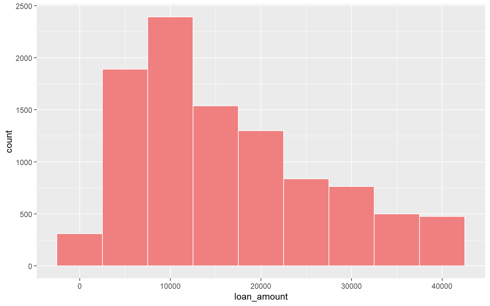
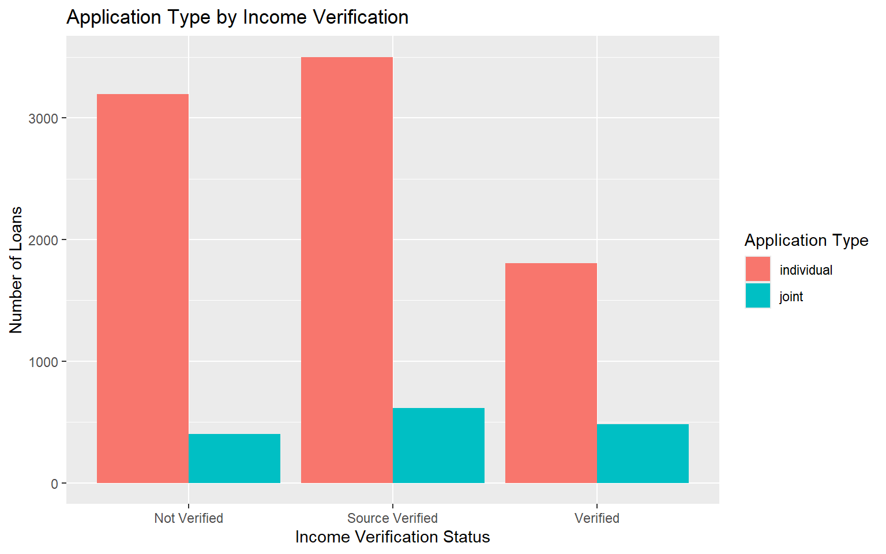
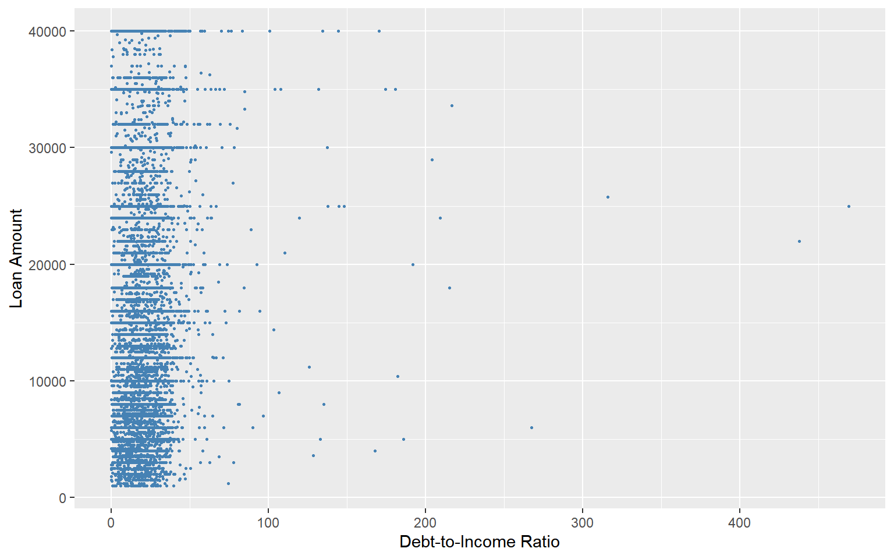
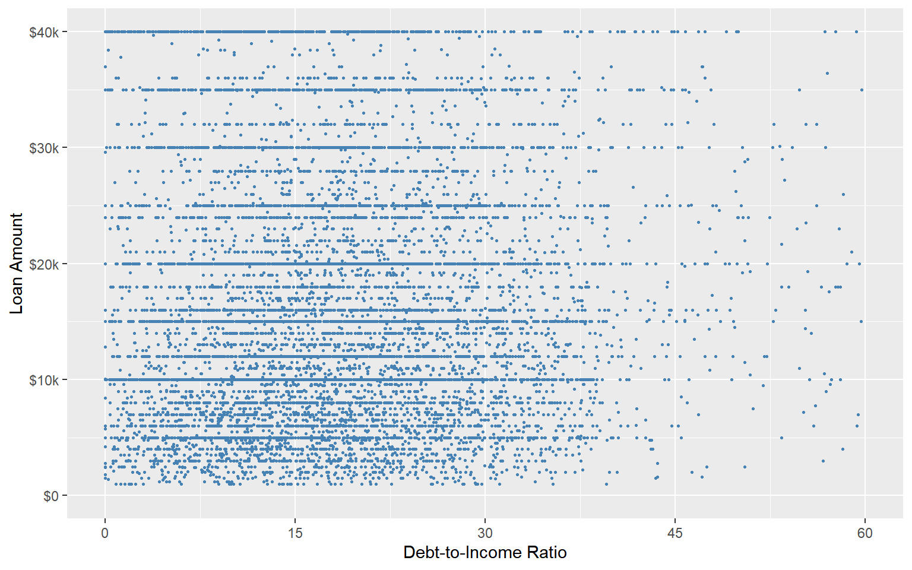
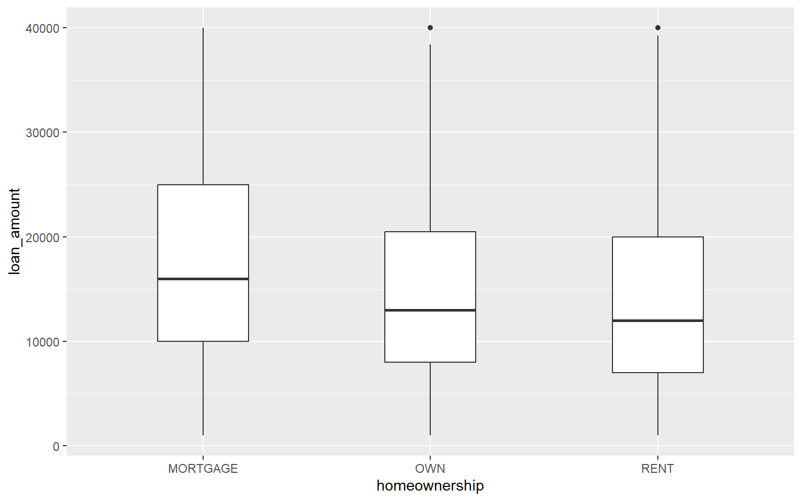

Week 2 Answers (0710)
1 Download and Import Data
Download the dataset
loans_full_schema.csv(right click here) and save it in thedatafolder.Read
loans_full_schema.csvand save it asloan.
library(tidyverse)
loan <- read.csv("data/loans_full_schema.csv")2 Histogram
Use loan to create a histogram of loan_amount. Set the bin width to 5000, fill the bars with lightcoral, and set the bar outline color to white.
loan %>%
ggplot(aes(x = loan_amount)) +
geom_histogram(binwidth = 5000,
fill = "lightcoral",
color = "white")3 Bar Graph
Use loan to create a bar graph of verified_income, and fill the bars by application_type.
Set
position = "dodge"ingeom_bar().Add graph title and axis labels:
- Title:
Application Type by Income Verification - x-axis:
Income Verification Status - y-axis:
Number of Loans - fill legend:
Application Type
- Title:
loan %>%
ggplot(aes(x = verified_income, fill = application_type)) +
geom_bar(position = "dodge") +
labs(
x = "Income Verification Status",
y = "Number of Loans",
title = "Application Type by Income Verification",
fill = "Application Type"
)
4 Scatter Plot
Use loan to draw a scatter plot of debt_to_income (x-axis) and loan_amount (y-axis).
Set the point color to
steelblue.Set the point size to
0.6.Add x-axis and y-axis labels.
TipHint
You can use geom_point() and labs().
loan %>%
ggplot(aes(x = debt_to_income, y = loan_amount)) +
geom_point(color = "steelblue", size = 0.6) +
labs(
x = "Debt-to-Income Ratio",
y = "Loan Amount"
)
5 Adjust Axis Scales
Draw the same scatter plot again, but this time adjust the axes:
Set the x-axis limits from
0to60, with breaks at0,15,30,45, and60.Set the y-axis limits from
0to40000, with breaks at0,10000,20000,30000, and40000.Label the y-axis breaks as
$0,$10k,$20k,$30k, and$40k.
loan %>%
ggplot(aes(x = debt_to_income, y = loan_amount)) +
geom_point(color = "steelblue", size = 0.6) +
labs(
x = "Debt-to-Income Ratio",
y = "Loan Amount"
) +
scale_x_continuous(
limits = c(0, 60),
breaks = c(0, 15, 30, 45, 60)
) +
scale_y_continuous(
limits = c(0, 40000),
breaks = c(0, 10000, 20000, 30000, 40000),
labels = c("$0", "$10k", "$20k", "$30k", "$40k")
)
6 Box Plot
Use loan to create a box plot of loan_amount by homeownership. Set width = 0.4.
box_plot <- loan %>%
ggplot(aes(x = homeownership, y = loan_amount)) +
geom_boxplot(width = 0.4)
print(box_plot)
7 Save the Graph
Create a folder called
figuresin your project folder.Save the box plot from the last question to the
figuresfolder with the namewk02_loan_amount_home_plot.png.Set
width = 6,height = 4, anddpi = 300.
ggsave(filename = "wk02_loan_amount_home_plot.png",
plot = box_plot,
path = "figures",
width = 6,
height = 4,
dpi = 300)